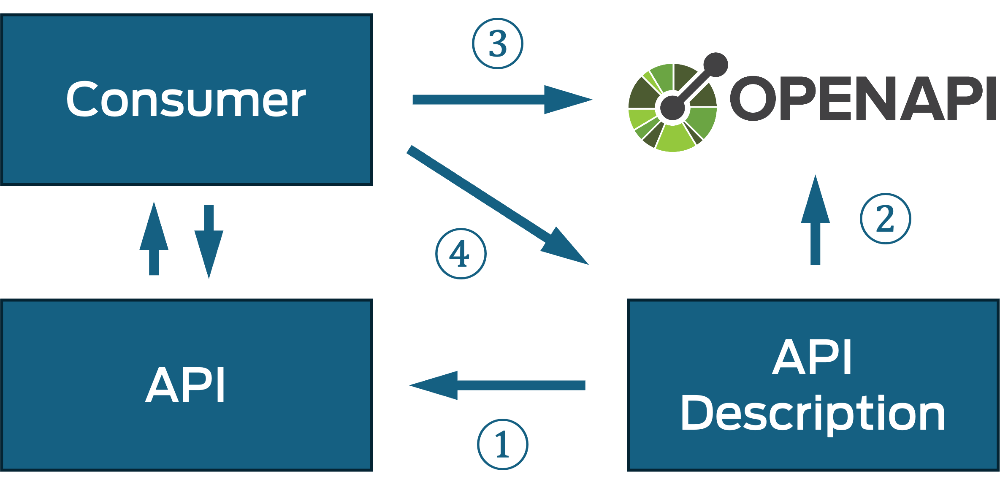
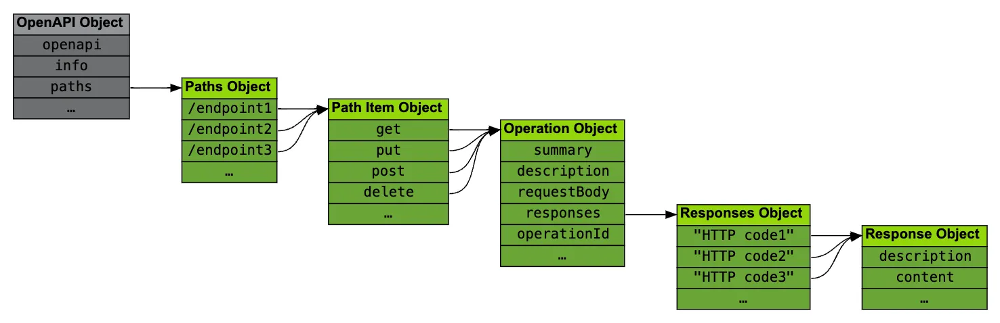
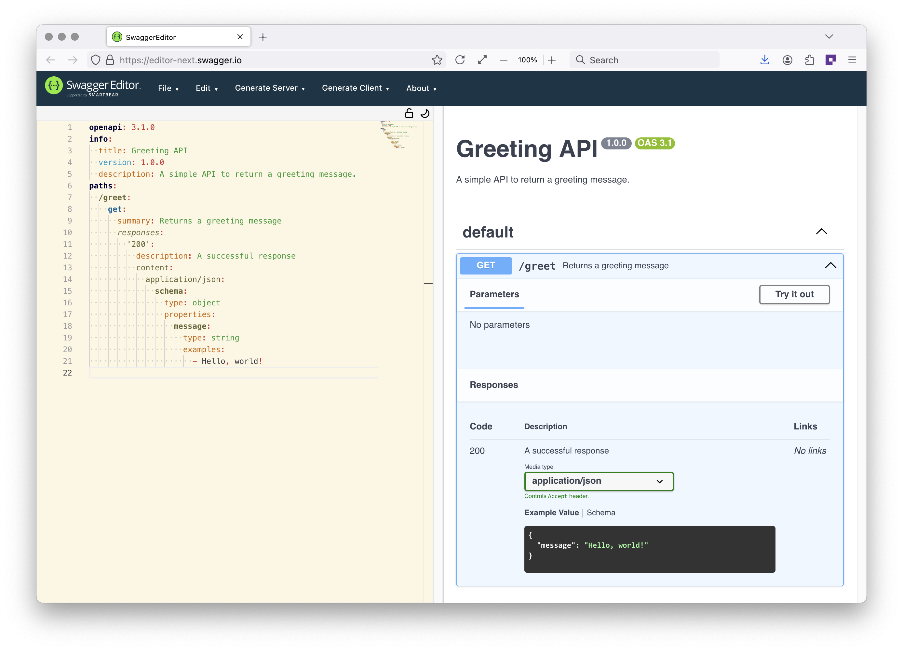
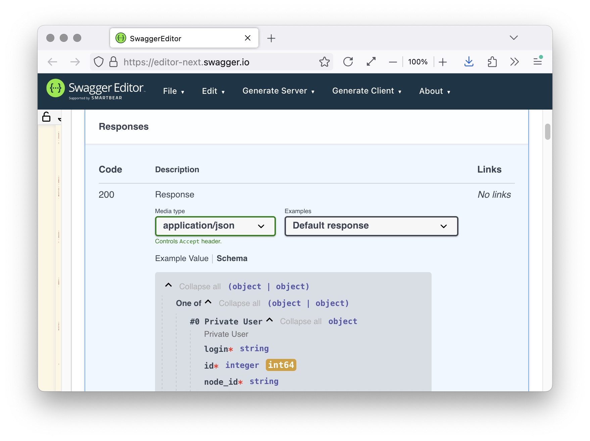

OpenAPI as a Machine-Readable Format
(3) OpenAPI: The Big Picture

(4) OpenAPI is Structured Data

- APIs described by OpenAPI are described in a structured way
- Resources [Resources: URI Paths (1)], interactions [Interactions: Operations and Parameters (1)], and representations [Representations: Requests and Responses (1)] are core concepts
- OpenAPI must use a structured way to describe these concepts
(5) OpenAPI Versions
- December 2015: [https://spec.openapis.org/oas/v2.0.html] (previously Swagger 2.0)
- July 2017: [https://spec.openapis.org/oas/v3.0.0.html] (currently at [https://spec.openapis.org/oas/v3.0.4.html])
- February 2021: [https://spec.openapis.org/oas/v3.1.0.html] (currently at [https://spec.openapis.org/oas/v3.1.2.html])
- September 2025: [https://spec.openapis.org/oas/v3.2.0.html]
(6) OpenAPI Terminology
- OpenAPI is the name of the standard
- OAI is the name of the OpenAPI Initiative behind OpenAPI
- OAS identifies the OpenAPI specification
- OAD identifies an OpenAPI description (which is based on OAS)
- Please do not call any of these things
Swagger
!
(7) OpenAPI Object Structure

(8) Minimal OpenAPI in JSON
{ "openapi": "3.1.0",
"info": {
"title": "Greeting API",
"version": "1.0.0",
"description": "A simple API to return a greeting message."
},
"paths": {
"/greet": {
"get": {
"summary": "Returns a greeting message",
"responses": {
"200": {
"description": "A successful response",
"content": {
"application/json": {
"schema": {
"type": "object",
"properties": {
"message": {
"type": "string",
"examples":
["Hello, world!"] }}}}}}}}}}}
(9) Minimal OpenAPI in YAML
openapi: 3.1.0
info:
title: Greeting API
version: 1.0.0
description: A simple API to return a greeting message.
paths:
/greet:
get:
summary: Returns a greeting message
responses:
'200':
description: A successful response
content:
application/json:
schema:
type: object
properties:
message:
type: string
examples:
- Hello, world!
(10) Minimal OpenAPI in Editing Tool

Interactions: Operations and Parameters
(20) Hypertext Transfer Protocol (HTTP)
- The
language
how clients and servers communicate
- Request/response model where the client always initiates the interaction
- Each request has a request method (e.g.,
GET)
- Each response has a response status (e.g.,
200 OK)
- Requests and responses use header fields for metadata
- Requests and responses can have a message body
(21) HTTP Example: Accessing OAI
GET / HTTP/1.1
Host: www.openapis.org
HTTP/1.1 200 OK
Connection: keep-alive
Content-Length: 262452
Cache-Control: public, max-age=604800
Content-Type: text/html; charset=UTF-8
Server: nginx
Strict-Transport-Security: max-age=31622400
Date: Fri, 19 Jul 2024 14:59:04 GMT
<!doctype html>
<html lang="en-US">
<head>
...
(22) Parameters in URIs and HTTP
- A simple way to send data from client to server
path: Embedded in URI (https://github.com/octocat)
query: Appended to URI (https://github.com/octocat?tab=repositories)
header: Sent as HTTP header field
cookie: Sent as part of HTTP cookie management
- Larger data needs to be sent in HTTP message body
(23) Path Parameters in OpenAPI
paths:
"/users/{username}":
get:
summary: Get a user
operationId: users/get-by-username
parameters:
- name: username
description: The handle for the GitHub user account.
in: path
required: true
schema:
type: stringGET https://api.github.com/users/octocat
(24) Query Parameters in OpenAPI
paths:
"/users":
get:
summary: List users
operationId: users/list
parameters:
- name: since
description: A user ID. Only return users with an ID greater than this ID.
in: query
required: false
schema:
type: integer
- name: per_page
description: The number of results per page (max 100).
in: query
schema:
type: integer
default: 30GET https://api.github.com/users?since=1&per_page=20
Representations: Requests and Responses
(26) Data Exchange with HTTP APIs
- URI and HTTP parameters (
path, query, header/cookie)
- Media Types (rooted in Email and Browsers)
- JSON (rooted in shared structured data)
(28) API Response with Media Type
paths:
"/users/{username}":
get:
summary: Get a user
operationId: users/get-by-username
parameters:
- name: username
description: The handle for the GitHub user account.
in: path
required: true
schema:
type: string
responses:
'200':
description: Response
content:
application/pdf: {}
(29) Web-level Structured Data
- JavaScript Object Notation (JSON) for exchanging structured data
application/json says nothing about the data itself
- JSON Schema for describing valid structured data
- OpenAPI uses JSON Schema for describing structured data
(30) API Response: Structured Data
{
"login": "octocat",
"id": 1,
"node_id": "MDQ6VXNlcjE=",
"avatar_url": "https://github.com/images/error/octocat_happy.gif",
"gravatar_id": "",
"url": "https://api.github.com/users/octocat",
"html_url": "https://github.com/octocat",
"followers_url": "https://api.github.com/users/octocat/followers",
"following_url": "https://api.github.com/users/octocat/following{/other_user}",
"gists_url": "https://api.github.com/users/octocat/gists{/gist_id}",
"starred_url": "https://api.github.com/users/octocat/starred{/owner}{/repo}",
"subscriptions_url": "https://api.github.com/users/octocat/subscriptions",
"organizations_url": "https://api.github.com/users/octocat/orgs",
"repos_url": "https://api.github.com/users/octocat/repos",
(31) API Response with Media Type
paths:
"/users/{username}":
get:
summary: Get a user
operationId: users/get-by-username
parameters:
- name: username
description: The handle for the GitHub user account.
in: path
required: true
schema:
type: string
responses:
'200':
description: Response
content:
application/json:
schema:
oneOf:
- "$ref": "#/components/schemas/private-user"
- "$ref": "#/components/schemas/public-user"
(32) JSON Schema for JSON Data
public-user:
title: Public User
description: Public User
type: object
properties:
login:
type: string
id:
type: integer
format: int64
node_id:
type: string
avatar_url:
type: string
format: uri
gravatar_id:
type:
- string
- 'null'
(33) Receiving Data on the Web: Responses

(34) OpenAPI Components: Don't Repeat Yourself
- Many concepts/models in APIs are reused
- Concepts may also be reused across various APIs
- Avoiding copy/paste always is a good idea
components allows to define reusable building blocks
components supports 10 types of building blocks
pathItems, schemas, responses, parameters, examples, …
(35) 30'000 ft View of OpenAPI 3.1.0
openapi: Defines which spec version is used
info: Provides metadata about the API
servers: Information about available servers
paths: Paths and operations for the API
webhooks: Support for server-initiated interactions
components: Reusable components for the description
security: Declaration of security mechanisms
tags: Used for grouping concepts across the API
externalDocs: Additional external documentation
(36) OpenAPI: The Easy Bits
openapi: 3.1.0
info:
version: 1.1.4
title: GitHub v3 REST API
description: GitHub's v3 REST API.
license:
name: MIT
url: https://spdx.org/licenses/MIT
termsOfService: https://docs.github.com/articles/github-terms-of-service
contact:
name: Support
url: https://support.github.com/contact?tags=dotcom-rest-api
servers:
- url: https://api.github.com
externalDocs:
description: GitHub v3 REST API
url: https://docs.github.com/rest/